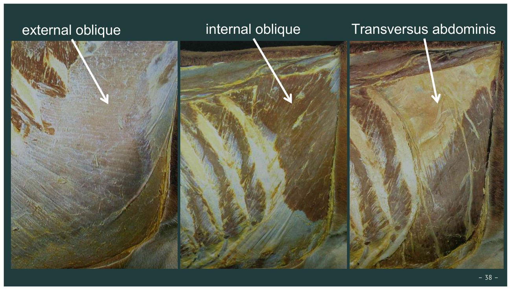
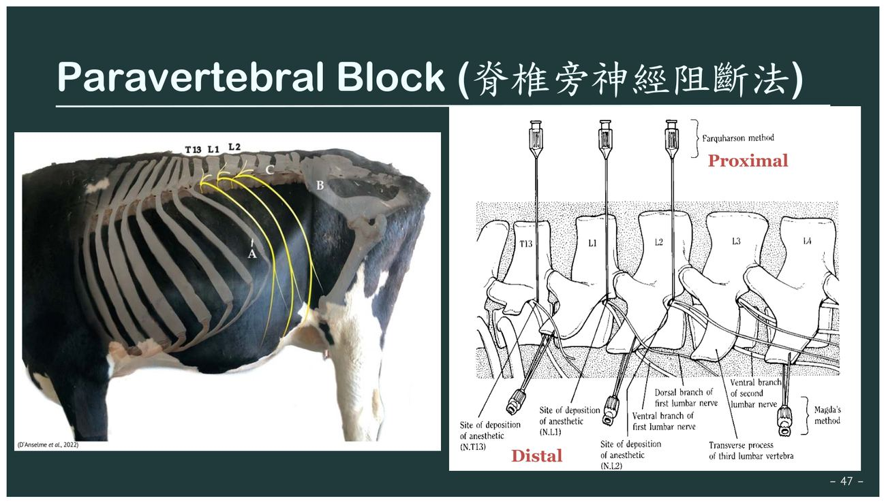

重點摘要
- 反芻動物躺臥麻醉的雙重呼吸風險，是全章臨床意義最重的部分：長時間仰躺→瘤胃脹氣／逆流→吸入性肺炎是一條路徑；瘤胃同時壓迫橫膈→換氣不足→低血氧＋高碳酸血症＋呼吸性酸中毒是另一條路徑，兩者機轉不同但常一起出題。對應處置（術前禁食、cuffed ET tube、口瘤胃管）務必連著風險一起記。
- Xylazine 在懷孕牛身上有明確用藥禁忌：早期妊娠使用有類似催產素的作用，可能誘發子宮收縮導致流產，是牧場臨床與選擇題都常考的用藥安全重點。
- 局麻藥選擇是一套邏輯，不是死背表格：Lidocaine 起效快、作用短、各途徑皆可用，安全總劑量 3–5 mg/kg（600 kg 牛約 90–150 mL 2%）；Bupivacaine 雖長效，但心血管毒性高，僅限硬膜外／神經周圍給藥——選藥時先問「要多久藥效、走哪個途徑」。
- 牛左側腹壁手術的區域麻醉術式，各有各的取捨：直線浸潤麻醉最直觀但需精確找到兩層肌肉；倒 L 型阻斷操作簡單但阻斷範圍固定（T13、L1、L2）；脊椎旁神經阻斷可個別阻斷神經根，近端術式會有暫時性脊柱側彎的副作用、遠端術式則沒有——這組比較是本章新增內容的核心，也是實習時最常被問到「你要選哪一種」的地方。
- 硬膜外麻醉的定位與劑量要能倒背如流：牛尾根硬膜外常用於尾巴、肛門、外陰、會陰、後乳房、陰囊等部位手術，定位於薦骨與尾椎第一節間隙（C1–C2），2% lidocaine 劑量約 0.5–1.0 mL／50 kg（牛上限 10 mL），並以「hanging drop technique」確認針尖是否已進入硬膜外腔。
- 手術分類與抗生素時機是無菌原則的兩根支柱：手術分類三級（Clean／Clean-contaminated／Contaminated-dirty）決定感染風險評估與抗生素使用策略；預防性抗生素應在術前給予、最晚不超過術中，且抗生素永遠無法取代良好的無菌操作與手術技術，是最常見的觀念題陷阱。
內容以老師講義為主體：講義①＝〈Presurgical consideration & anesthesia〉（48 頁，p.N 連到這份）、講義②＝9/16 發的〈…anesthesia_2〉（29 頁，局部麻醉之後的更新版，兩份不一致時以講義②為準）。標「共筆」的段落取自 B06 共筆（2020 年季昭華老師的課，今年講義沒有），標「補充」的是講義以外的延伸，標「推測」的是出題方向推測。圖片為老師講義截圖。
- 季昭華「大動物外科術前檢查程序及應注意事項」：2021、2022、2023（B09 口述）期中都考，申論題 → 見第 4 節「術前檢查程序」的答題架構。
- 2021 期中「遠端腰椎旁側麻醉要麻的神經與施作部位」 → 第 12 節：T13、L1、L2；L1、L2、L4 橫突末端。
- 推測：今年講義新增的近端／遠端脊椎旁阻斷比較、尾根硬膜外劑量換算（0.5–1.0 mL／50 kg、牛上限 10 mL）、倒 L 兩條線的位置，都很適合出填空或計算。
動物外科學簡史 History of Animal Surgery
了解大動物外科的發展脈絡，有助於理解「在農場執行手術」與「無菌手術室手術」兩種模式並存的歷史成因（講義① p.2–4）。
對象以軍馬與生產性動物為主（役用馬、牛），因具重要軍事與農業價值而發展相關處置技術。
獸醫學隨人醫發展並進，逐漸系統化；麻醉與無菌概念開始出現，重心仍在大動物（牛、豬、馬）。
工業革命後農業型態改變，重心逐漸由「農場動物」轉向伴侶動物，但大動物外科的臨床原則仍延續早期發展的實務智慧。
Barber-Surgeons（理髮師外科醫）
中世紀時人體解剖屬於禁忌，拔牙、腫瘤切除、截肢等手術由「barber」執行——因為他們已擁有所需的銳利刀具。這也是外科（Surgery）發展早期與正規醫學分流的歷史背景。
外科醫師（Surgeon）的知識基礎
執行動物外科需整合以下基礎學科知識，這也是後續「術前評估」與「麻醉」章節的推理骨幹：
Anatomy
Physiology
Microbiology
Pharmacology
病患評估 Evaluation of the Patient
無論急診或擇期手術，理學檢查都是術前的基本標準；是否加做實驗室檢查則屬於外科醫師的臨床判斷（講義① p.7–10）。
理學檢查（physical examination）適用於所有手術病患。實驗室檢查「該做到什麼程度」沒有絕對標準，需依個案風險判斷——但特定情境有明確建議加做的項目（見下表）。
依情境加做的實驗室檢查必考
| 檢查項目 | 臨床情境 | 物種 |
|---|---|---|
| 電解質檢測 | 右側皺胃疾病（右側皺胃變位 Right Displaced Abomasum, RDA／右側皺胃扭轉 Right Abomasal Volvulus, RVA） | 牛 |
| 尿液分析 | 評估酮症（ketosis） | 牛 |
| 完整生化套組 | 有年齡或全身性疾病考量時 | 通用 |
| BUN、Creatinine | 疑似泌尿道問題 | 通用 |
| 腹腔液分析 | 剖腹探查前的腹絞痛（colic）病例 | 馬 |
| PCV、Total Protein | 幼齡動物（原文標示 4 歲以下，臨床上尤其留意新生幼駒） | 馬 |
酮症檢測方法
檢測尿中 acetoacetate，操作簡便、可床邊快篩。
檢測血中 BHBA（β-hydroxybutyrate），準確度較高，臨床上常作為確診依據。
異常結果的處置原則
- 若實驗室數值異常，需找出根本原因並嘗試矯正，而非直接忽略進行手術。
- 手術前應告知畜主已發現的風險與異常。
- 病歷紀錄應全程保存——對馬與牛而言（含牛群紀錄 herd records），這是手術流程中不可或缺的一環，即使是在農場執行的處置也一樣。
術前檢查程序與注意事項（共筆補充・考古題）
季昭華老師每年期中都考「大動物外科術前檢查程序及應注意事項」。今年講義只有「病患評估、手術判斷、無菌、術後照護」四個標題，下面依 B06 共筆（2020 季昭華老師〈大動物外科手術注意事項〉）補齊完整流程，並和講義對照。
本節內容來自 2020 年學長姐共筆（非今年講義、非官方答案）。和今年講義不一致的地方已標出，考試時兩種說法都要知道。
答題架構（申論題用）必考
病歷 → 全體 → 局部 → 特殊 → 實驗室
時機・禁食・營養・安靜・器材
必要性・經濟性・能力
解剖・術部處理・保定・麻醉
一、術前檢查必考
| 項目 | 內容（共筆） |
|---|---|
| 病歷 | 主要來自牧場主人的紀錄；獸醫師也要從觀察動物發現異狀，合併牧場紀錄判斷。講義①也強調病歷（含牛群紀錄 herd records）任何時候都要保存，在牧場做的處置也一樣。 |
| 全體檢查 | ① 體格與體重：健康牛背線平直，拱背代表不適；胖瘦用 BCS（Body Condition Score）；馬常配合行走看步態與蹄；牛身體不適常出現跛行 ② 姿勢與舉動：牛趴臥時前腳內收、後腳側放；騎乘他牛者在發情期，站立接受騎乘者在發情末期（將排卵） ③ 精神狀態：是否與人互動、是否被食物吸引 ④ 性情：公牛暴躁，勿太靠近 ⑤ 體表：硬塊、疹子、掉毛 ⑥ 體溫：直腸溫（溫度計要貼直腸黏膜），或耳標電子監測 |
| 局部檢查 | 視診（繞動物一圈）、觸診（體表、按壓腹脇）、叩診（第四胃變位可聽到金屬音 ping）、聽診（左腹脇聽瘤胃蠕動音；右腹脇聽第四胃與腸音）、探診（直腸觸診非常重要，先移除糞便、讓腸道放鬆）、嗅診（尿毒症→氨味；酮症→呼氣果香味；子宮蓄膿、胎衣滯留→腐敗惡臭） |
| 特殊檢查 | 直腸檢查（子宮、卵巢、腎臟）；注射診斷（常用於馬：lidocaine 阻斷蹄部神經，跛行消失→疼痛在阻斷處）；生檢採樣；試驗手術（懷疑消化道問題但無明確方向時直接開腹探查）；攜帶式超音波、X 光，大動物醫院的 CT、MRI |
| 實驗室 | 共筆：常規測 PCV、RBC、total protein，數據異常時手術暫緩，但緊急手術可能仍要做。講義①：依情境加做（右側皺胃疾病→電解質；酮症→尿液分析；colic 馬→腹腔液……見上一節表格） |
二、術前準備必考
| 項目 | 內容（共筆） |
|---|---|
| 手術時機 | 緊急：如難產 擇期：如外傷、骨折、第四胃變位 限期：如懷孕牛的乳房問題，應待生產後再手術 |
| 禁食 | 共筆：牛有四個胃，禁食也很難讓胃完全排空，空腹太久還可能破壞瘤胃菌相，所以「稍微進食即可，避免吃飽後手術」。 |
| 營養、保持安靜 | 減少動物緊迫 |
| 特殊準備 | 產科器材（如助產器）、瘤胃器材（如瘤胃開窗器具） |
禁食時間：今年講義①（p.27、p.29）寫牛禁食 12–24 小時、前一晚禁水，羊禁食 12–24 小時、禁水 6–12 小時，目的是減少躺臥時的逆流與吸入（見第 8 節）。2020 共筆的「稍微進食即可」是另一位老師（季昭華）的說法，側重瘤胃菌相。考今年的題目以講義為準；寫季老師的申論題時，可以兩點都寫：全身麻醉／躺臥手術要禁食防逆流，但牛很難完全排空，禁食過久會影響瘤胃菌相。
三、術前評估 四、無菌與抗生素理解
- 不論緊急或一般手術，術前都要做基本生理檢查
- 依病畜狀況給予輸液
- 評估手術的必要性與經濟可行性（對應講義「手術判斷」三問，見下一節）
- 大動物手術多在野外／牧場，要盡可能消毒確保無菌
- 完全無菌：骨科；無菌—污染：腸胃道、呼吸道、泌尿道；污染：傷口（講義的三級分類見第 6 節）
- 抗生素：注意劑量、選對藥；術前給予、術後立即再給；選不刺激傷口與組織的；依牧場常在菌的抗藥性選藥
- 馬對破傷風非常敏感，術後常搭配破傷風預防
五、術前計畫：術部處理順序必考
先了解手術部位的解剖構造，再依序處理（共筆）：
六、術後管理理解
共筆列七項：麻醉甦醒、保溫、監護、併發症處理、安靜與適度活動、預防與控制感染（抗生素）、飼養管理。講義①只列三項：術後給藥、術後餵食與管理、術後追蹤（第 7 節）。
補充：大動物保定（共筆）看過
保定的核心是人與動物都安全、操作能順利完成；分化學保定與物理保定（遮蔽視覺聽覺如眼罩、延伸手臂如趕牛棍、保定架／繩索／帆布）。牛的視野超過 270°，只有正後方是盲點，接近時要讓牠看到。
| 物種 | 常用保定（共筆） |
|---|---|
| 牛 | 窄欄（chute）；柵欄叩頭（直腸檢查用，無法抽血）；牛鼻鉗；開口器（牛上顎無門齒，馬有）；頭絡（halter）抽血時用；後腳防踢；尾巴控制（尾靜脈可抽血）；繩索倒牛；吊牛器（防褥瘡） |
| 馬 | 頭套；鼻捻子／耳捻子（現在不鼓勵）；舉提前肢或後肢（不要站在馬正後方）；尾結（麻醉後助起身）；保定架、頸架、吊馬器、配種腳架 |
| 羊 | 體型小、容易操作；山羊要注意角 |
| 豬 | 套索套上顎（豬會往後拉對抗）；體表看不到血管，抽血多為盲抽，常用前腔靜脈竇或耳靜脈 |
手術判斷 Surgical Judgement
是否進行手術不只是技術問題，也是臨床倫理與資源評估的綜合判斷（講義① p.12–14）。
術前自問三問題
判斷結果對應處置
| 情境 | 建議做法 |
|---|---|
| 超出自身能力／設備 | 轉診（Be referred） |
| 緊急病例 | 盡力而為（Do your best!） |
| 有經濟效益考量 | 對畜牧生產動物特別重要（Important for livestock） |
手術地點：農場 vs. 手術室
許多大動物（牛、羊、豬）手術可以「在農場（on the farm）」完成。但部分術式因需要更嚴格的無菌環境，應在無塵手術室執行：
範例：馬匹腕骨（carpal）與籽骨（sesamoid bone）碎骨片移除的關節切開術（arthrotomy），須在無塵手術室進行，避免關節腔感染。
無菌與抗菌原則 Principles of Asepsis and Antisepsis
感染管制決定了手術成敗與病患福祉，是外科判斷中與「手術技術」同等重要的一環（講義① p.16–22）。
手術部位感染（SSI）的四大決定因子
Host defense
Physiologic derangement
Contamination at surgery
Prolonged surgical time
其他會影響深部組織／器官感染的因素：低白蛋白血症（hypoalbuminemia）、曾接受過手術。
感染控制方法
- 執行無菌手術操作
- 辨識高風險病患
- 術前矯正全身性失衡
- 適當使用預防性抗生素
農場環境下「理想無菌標準」有時難以完全達成，但仍應盡力追求最高可行標準——否則手術品質可能低到危及病患福祉，也會影響獸醫師的專業聲譽。
手術分類（Surgical Classification）必考
| 分類 | 定義 | 範例 |
|---|---|---|
| Clean（清潔） | 未進入消化道、泌尿道或呼吸道 | 關節切開術（arthrotomy） |
| Clean-contaminated（清潔污染） | 有進入上述管道，但無內容物外漏 | 皺胃移位固定術（abomasopexy） |
| Contaminated-dirty（污染／骯髒） | 內容物明顯外漏或有急性發炎反應 | 傷口、膿瘍、失活腸道、瘤胃造口術／瘤胃切開術 |
依分類結果決定術後感染的預防強度；無論何種分類，術部都須正確準備（剃毛＋無菌消毒），且應穿著乾淨衣物。
抗生素使用原則必考
抗生素絕不能用來彌補手術技術上的缺失。若判斷需要使用抗生素，須慎選藥物種類、劑量與療程長度；為求最大效益，應在術前預防性給藥，最晚於術中給予。
術後照護 Postoperative Care
術後管理是手術成功與否的延伸，三大要項缺一不可（講義① p.24；共筆版的七項見第 4 節）。
Postoperative medication
Postoperative feeding and management
Postoperative follow-up
反芻動物麻醉的特殊風險
牛為反芻動物，腹腔內有巨大瘤胃，這是大動物麻醉章節中臨床意義最重的一段——請務必理解「機轉 → 併發症 → 預防措施」的完整邏輯鏈（講義① p.26–29）。
病理機轉鏈必考
※ 脹氣（bloating）也可能發生於術後，並非只在麻醉中出現。
預防措施
- 麻醉前禁食反芻動物
- 使用帶氣囊氣管內管（cuffed endotracheal tube），降低逆流吸入風險
- 可放置口瘤胃管（oro-ruminal tube）排出瘤胃氣體與液體內容物，減少脹氣
禁食／禁水時間表
| 物種 | 禁食時間 | 禁水時間 |
|---|---|---|
| 牛 | 12–24 小時 | 手術前一晚開始（overnight） |
| 羊 | 12–24 小時 | — |
| 山羊 | — | 6–12 小時 |
※ 講義原文（p.29）是「Feed and water should be withheld from sheep and goats 12–24 and 6–12 hours, respectively」：綿羊與山羊都是禁食 12–24 小時、禁水 6–12 小時（上表分列只是排版）。2020 共筆的「稍微進食即可」說法見第 4 節「版本差異」。
小牛（calves）可用深度鎮靜做化學保定，讓獸醫師直接進行手術，不一定需要全身麻醉。
鎮靜用藥 Sedation
大動物臨床上最常使用 α-2 腎上腺素受體致效劑（α-2 adrenoceptor agonist），同時提供鎮靜與鎮痛效果（講義① p.30–33）。
常用藥物
Xylazine（希拉嗪）、 Detomidine、 Medetomidine、 Dexmedetomidine、 Romifidine
副作用（藥物／劑量／給藥途徑相關）
- 短暫高血壓期，隨後轉為低血壓
- 心跳 ↓、心輸出量 ↓
- 瘤胃遲緩（ruminal atony）與腸阻塞（ileus）
懷孕牛用藥禁忌：Xylazine 在早期妊娠母牛有類似催產素（oxytocin-like）的作用，會誘發子宮收縮，增加流產風險——懷孕牛使用需特別謹慎。臨床安全提醒
α-2 致效劑可與opioid（如 butorphanol）併用，降低動物突發反應（sudden responsiveness）的風險。
Xylazine 劑量（牛）必考
| 給藥途徑 | 劑量 | 備註 |
|---|---|---|
| IV | 0.02–0.1 mg/kg | 作為 casting agent 或標準鎮靜 |
| IM | 0.11–0.22 mg/kg | 作為 casting agent 或標準鎮靜 |
| IM | 0.015–0.025 mg/kg | 不需完全躺臥的站立鎮靜 |
拮抗劑（Antagonist）
| 藥物 | 劑量 | 備註 |
|---|---|---|
| Yohimbine | 0.12 mg/kg IV | 副作用：高血壓、心律不整 |
| Tolazoline | 2–4 mg/kg IV | 副作用同上；臨床上起效通常比 yohimbine 快 |
局部浸潤／區域麻醉 Infiltration / Regional Analgesia
藉由感覺神經去敏化（desensitization）達成局部止痛，可用「浸潤（infiltration）」直接注射於手術部位，或「阻斷（block）」麻醉支配該區域的感覺神經（講義① p.34–46；講義② p.2–14 為更新版）。
局部麻醉藥比較
| 藥物 | 起效速度 | 作用時間 | 給藥途徑 |
|---|---|---|---|
| Lidocaine（利多卡因） | 短 | 短 | 各種途徑皆可 |
| Mepivacaine | 快 | 中等 | 各種途徑皆可 |
| Bupivacaine | 慢 | 長 | 僅限硬膜外或神經周圍給藥 |
Bupivacaine 心血管毒性較高，血管吸收後危險性高，因此臨床上使用僅限於硬膜外（epidural）與神經周圍（perineural）給藥；Lidocaine 與 Mepivacaine 則各種途徑皆可使用。
全身毒性（講義②新增，講義② p.4）：血中局麻藥濃度過高會造成全身毒性——抑制腦與心臟細胞膜上的鈉離子通道，影響中樞神經系統（CNS）與心血管系統（CVS）。這就是為什麼 lidocaine 有安全總劑量上限、也不要把大量藥打進腹腔（快速血管吸收）。
藥物化學背景（機轉概念）
多數局部麻醉藥的活性成分為有機弱鹼，水溶性差且不穩定；製成鹽酸鹽（HCl salt）可提升水溶性、吸收率與生體可用率，並延長保存期限——但也因此藥液偏酸性，注射時會有短暫刺痛感／灼熱感。
Lidocaine 使用細節必考
安全總劑量： 3–5 mg/kg
約 90–150 mL 2% lidocaine／600 kg 牛，單次注射不可超過此劑量
起效時間： 約 5–10 分鐘
鎮痛維持： 約 90–180 分鐘
臨床上：成牛一般手術約 100 mL 2% lidocaine 即足夠。
換算：2% ＝ 20 mg/mL；600 kg × 3–5 mg/kg ＝ 1800–3000 mg ÷ 20 ＝ 90–150 mL（講義數字，自己驗算一致）。
直線浸潤麻醉技術步驟（Linear Infiltration Anesthesia）必考
應避免將大量局麻藥直接注入腹腔，因快速血管吸收可能導致中毒；注射應呈直線排列。雖然把局麻藥直接打入切口線很方便，但會造成組織水腫、可能影響傷口癒合，不建議常規使用此捷徑。

倒 L 型阻斷 Inverted L Block
牛隻左側腹壁手術常用的區域麻醉術式，透過兩條注射路徑麻醉特定神經支配區域（講義① p.47–48；講義② p.9–14）。
定位與技術必考
- 水平線：距腰椎橫突（lumbar transverse processes）腹側約 5–10 cm（講義②；講義① p.47 寫「約 10 cm」）
- 垂直線：距最後一根肋骨後方 5–10 cm
- 兩條路徑皆需麻醉一層皮下＋兩層肌肉＋腹膜（講義②加上腹膜）
- 注射手法同直線浸潤（講義②把這幾頁標為「Linear／Inverted L Block」）：18G 針在起點先打 3–5 mL → 換 15G、14 cm 長針，邊退針邊注藥，每層約 25–30 mL
麻醉範圍
主要阻斷第 13 胸神經（T13）與第 1、2 腰神經（L1、L2）所支配的區域。
適應症
Caesarean section
Rumen fistulation
脊椎旁神經阻斷 Paravertebral Block
與倒 L 型阻斷阻斷「固定範圍」不同，脊椎旁神經阻斷是直接在神經根出口處逐一阻斷 T13、L1、L2 這三條神經，依阻斷位置分近端與遠端兩種術式，各有優缺點（講義② p.15–22，今年新增）。

近端脊椎旁神經阻斷 Proximal Paravertebral Block必考
目標神經：T13、L1、L2；注射點在椎間孔（intervertebral foramen），距正中線約 3–5 cm，位於 T13／L1／L2 橫突（transverse process）尾側。
L1 橫突 →對應 T13；L2 橫突 →對應 L1；L3 橫突 →對應 L2。注射點在對應橫突前緣、距背側正中線 3–5 cm 處。
近端阻斷操作步驟
近端阻斷可能造成暫時性脊柱側彎（因單側肌肉麻痺不對稱所致）與體表血管擴張，是與遠端阻斷相比最大的臨床差異，術前應向操作者說明此為預期反應而非併發症。
遠端脊椎旁神經阻斷 Distal Paravertebral Block必考2021 期中
目標神經同樣是 T13、L1、L2，但注射點改在 L1、L2、L4 橫突末端，位置更偏遠端。
不會造成脊柱側彎（Lateral deviation of the spine does not occur）——這是遠端術式相對於近端術式最大的差別。
遠端阻斷操作步驟
三種牛左側腹壁區域麻醉術式的取捨：直線浸潤麻醉最直觀、但需精確找到兩層肌肉，麻醉不全風險最高；倒 L 型阻斷操作簡單、範圍固定，是最常用的入門術式；脊椎旁神經阻斷能針對性阻斷單一神經根、阻斷效果最完整，但操作難度與副作用（近端術式的脊柱側彎）也最高。
硬膜外麻醉 Epidural Anesthesia
硬膜外麻醉是將藥物注入硬膜外腔，阻斷該區域感覺（甚至運動）神經傳導，牛羊常用於尾巴、會陰與後段生殖泌尿系統相關的手術與處置（講義② p.23–29）。
兩種位置：腰薦與尾根必考
常用於綿羊、山羊，可搭配或不搭配鎮靜同時使用。
常用於牛、馬，適應症涵蓋尾巴、肛門、外陰、會陰、後段乳房、陰囊與後肢上段的手術；也可用於治療腸炎或直腸炎引起的裡急後重（tenesmus）。
牛尾根硬膜外操作步驟必考
2% lidocaine：0.5–1.0 mL／50 kg 體重；牛單次上限約 10 mL，山羊與綿羊上限約 3 mL——體型較小的反芻動物劑量上限差距很大，務必依物種分別記憶，避免劑量換算錯誤。
換算例：500 kg 牛 → 500 ÷ 50 × (0.5–1.0) ＝ 5–10 mL（剛好到上限）；700 kg 牛算出 7–14 mL，仍以 10 mL 為上限；60 kg 山羊 → 0.6–1.2 mL（低於 3 mL 上限）。（換算為自己依講義數字算的示意）
⚠ 共筆（2020 許凱程老師〈Bovine GI surgery〉）：尾根麻醉多用於子宮脫出、難產；下針點 S5–Cx1 或 Cx1–Cx2，一般用 18G 針，劑量「最好不要超過 5 cc，否則可能麻太深，牛腿軟坐下」；硬膜外腔為負壓，藥會被吸進去。與今年講義上限 10 mL 不同，考今年的題目以講義為準，臨床上留意站立手術時不要給太多。
學習重點整理
考試／臨床實務角度的整理，方便複習前快速掃過。
練習題 Practice Quiz
涵蓋本週各章節重點，先自己作答再點「顯示答案」核對，答錯的觀念回對應章節重讀一次。
理學檢查適用於所有病患，但實驗室檢查該做到什麼程度屬於外科醫師的臨床判斷，並非固定流程；不過特定情境（如右側皺胃疾病、酮症、colic）有明確建議加做的項目。
Abomasopexy 有進入消化道但無內容物外漏，屬於 Clean-contaminated；Contaminated-dirty 的範例是傷口、膿瘍、失活腸道、瘤胃切開術等有明顯內容物外漏或急性發炎的情況。
Bupivacaine 心血管毒性較高，經血管快速吸收風險高，臨床上僅限於硬膜外（epidural）或神經周圍（perineural）給藥；Lidocaine 與 Mepivacaine 才是各種途徑皆可使用。
長時間躺臥時巨大的瘤胃會壓迫橫膈運動，導致換氣不足，進而造成低血氧、高碳酸血症與呼吸性酸中毒；這與脹氣／逆流導致吸入性肺炎是兩條並行但機轉不同的風險路徑。
Xylazine 在早期妊娠母牛已被報告有類似催產素（oxytocin-like）的作用，會誘發子宮收縮，因此懷孕牛（尤其早期妊娠）使用需特別謹慎，不限特定給藥途徑或懷孕階段。
Lidocaine 安全總劑量為 3–5 mg/kg，600 kg 牛約需 1800–3000 mg，換算 2% lidocaine（20 mg/mL）約為 90–150 mL，單次注射不可超過此劑量。
倒 L 型阻斷沿水平線（距腰椎橫突腹側約 10 cm）與垂直線（距最後一根肋骨後方 5–10 cm）注射，主要阻斷 T13、L1、L2 神經支配區域，適用於剖腹產與瘤胃造口術。
牛腹壁由多層肌肉構成，僅麻醉單一層無法完全阻斷手術範圍的感覺神經。第一層通常可確認為腹外斜肌（external abdominal oblique），較好辨認；第二層較難分辨界線，可能包含腹內斜肌（internal oblique）、腹橫肌（transversus abdominis）與腹膜（peritoneum）。臨床操作難點在於第二層邊界不清楚，容易注射深度不足導致麻醉不全，但也要避免將大量局麻藥直接注入腹腔，因為快速血管吸收可能導致中毒。
手術部位感染的四大決定因子是宿主防禦力、生理狀態失衡、細菌污染風險與手術時間過長，這些主要透過良好的無菌操作、正確的手術分類判斷與縮短手術時間來控制；抗生素只是輔助的感染控制手段之一，無法逆轉因操作不當造成的組織創傷、污染或延長的手術時間。若依賴抗生素掩蓋技術缺失，除了感染風險仍然存在，也可能助長抗藥性問題，因此預防性抗生素只能作為完整無菌流程的補充，而非替代。
近端脊椎旁神經阻斷因單側肌肉麻痺不對稱，可能造成暫時性脊柱側彎，並伴隨體表血管擴張；遠端術式因注射位置不同，不會造成脊柱側彎，是兩者臨床選擇時的關鍵差異。
操作方式是在針頭刺入、抵達脊椎管底部後稍微退針，同時於針座（needle hub）滴入少量麻醉藥或生理食鹽水，並觀察液滴的動態：若針尖確實已進入硬膜外腔，腔內相對負壓會將液滴向內吸入，稱為「hanging drop technique」，是判斷定位是否成功的重要手感依據，尤其在操作者第一次執行此術式時特別關鍵。若注射時感受到明顯阻力、或液滴沒有被吸入，應重新確認針尖位置，避免誤注入非硬膜外腔隙（如皮下或肌肉層），影響麻醉效果甚至造成併發症。
0.5–1.0 mL／50 kg：450 ÷ 50 ＝ 9 → 4.5–9 mL，未超過牛的上限 10 mL。(D) 是 600 kg 牛局部浸潤的安全總量，(A) 接近羊的範圍。
遠端與近端的目標神經相同（T13、L1、L2），差在注射點：遠端打在 L1、L2、L4 橫突末端（每點上下各一次扇形 10–15 mL），不會造成脊柱側彎；(B) 是近端的注射位置（椎間孔，距正中線 3–5 cm）。
水平線在腰椎橫突腹側約 5–10 cm（講義①寫約 10 cm），垂直線在最後肋骨後方 5–10 cm；兩條線都要阻斷皮下、兩層肌肉與腹膜。(D) 是近端脊椎旁阻斷的位置。
站立鎮靜 0.015–0.025 mg/kg IM × 600 kg ＝ 9–15 mg ÷ 20 mg/mL ＝ 0.45–0.75 mL。(B) 是用 0.11–0.22 mg/kg IM（casting／躺臥）算的 66–132 mg；(C) 把 mg 誤當 mL。製劑濃度是題目設定，講義只給 mg/kg。
共筆（季昭華老師）分三類：緊急（難產）、擇期（外傷、骨折、第四胃變位）、限期（懷孕牛乳房問題，待生產後）。
答題要點（依共筆＋講義整理，非官方答案）
一、術前檢查：病歷（畜主紀錄＋獸醫觀察，含牛群紀錄）→ 全體檢查（體格體重與 BCS、姿勢舉動、精神、性情、體表、體溫）→ 局部檢查（視、觸、叩〔ping〕、聽〔左瘤胃、右皺胃腸〕、探〔直腸觸診〕、嗅〔氨味、酮味、腐臭〕）→ 特殊檢查（直腸檢查、注射診斷、生檢、試驗手術、超音波／X 光）→ 實驗室（PCV、RBC、TP；右側皺胃疾病測電解質、酮症做尿檢、colic 馬做腹腔液分析）；異常要找原因並矯正、告知畜主。
二、術前準備：時機（緊急／擇期／限期）；禁食（講義：牛禁食 12–24 h、前一晚禁水，防躺臥逆流吸入；但牛難完全排空、過久影響瘤胃菌相）；營養、保持安靜、準備特殊器材。
三、術前評估（手術判斷）：是否必要、不做會怎樣、能力與設備是否足夠（不足就轉診）；經濟效益。
四、無菌與抗生素：手術分類 Clean／Clean-contaminated／Contaminated-dirty；預防性抗生素術前給、最晚術中；抗生素不能彌補技術；馬注意破傷風預防。
五、術前計畫：熟悉解剖 → 除污、剃毛、刷洗 → 站立或倒臥保定 → 全身或局部麻醉 → 尾巴固定 → 消毒（由中心向外）→ 洞巾。
六、術後管理：甦醒、保溫、監護、併發症、安靜與活動、感染控制、飼養管理。